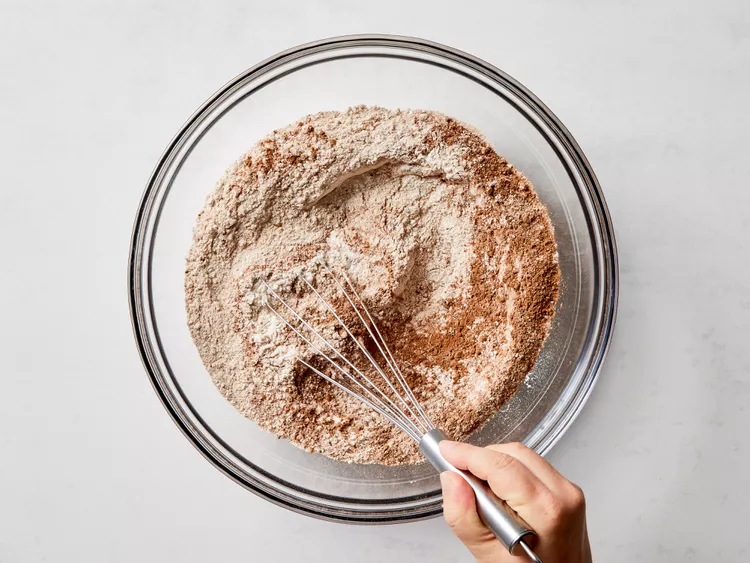

Home
Copycat Cheesecake Factory Brown Bread
- Prep Time: 25 mins
- Cook Time: 25 mins
- Rise Time: 2 hrs 15 mins
- Stand Time: 5 mins
- Cool Time: 30 mins
- Total Time: 3 hrs 40 mins
- Servings: 16
Ingredients
- 1 1/2 cups warm water (105-115 degrees F or 41 to 46 degrees C)
- 1 tablespoon honey
- 1 package instant dry yeast
- 3 1/4 cups bread flour, divided, or as needed
- 1 2/3 cups whole wheat flour
- 2 tablespoons unsweetened cocoa powder
- 1 1/4 teaspoons salt
- 3 tablespoons butter, softened
- 1/4 cup honey
- 2 tablespoons molasses
- 1/4 cup cornmeal
- 1/4 cup regular rolled oats
____________________________________________________________________________________________________________________________
Directions
- Gather all ingredients
- Whisk together warm water and 1 tablespoon honey in a bowl until combined. Sprinkle yeast over top and let stand until foamy, about 5 minutes.
- Whisk together 2 ½ cups bread flour, whole wheat flour, cocoa powder, and salt in a large bowl.

- Add the yeast mixture, butter, 1/4 cup honey, and molasses. Mix with a wooden spoon until combined.
- Turn dough out onto a lightly floured surface. Knead 5 to 8 minutes until dough is smooth, and slightly tacky, adding 2 tablespoons of bread flour at a time to help work the dough.
- Form dough into a large ball and place in a greased bowl. Cover bowl and let rise in a warm place until doubled in size, about 1 1/2 hours.
- Punch dough down and turn out onto a lightly floured surface.
- Divide the dough into 4 equal sized pieces, and shape into small loaves, roughly 6 inches long and 2 inches wide.
- Line a large baking sheet with parchment paper. Pour cornmeal onto a plate and dip the bottoms of the loaves in the cornmeal to lightly coat.
- Arrange loaves on prepared baking sheet, leaving ample space in between. Lightly moisten tops of loaves with a little water; sprinkle tops with oats.
- Cover loaves loosely with greased plastic wrap and let rise in a warm place until nearly doubled in size, 45 to 60 minutes.
- Meanwhile, preheat the oven to 350 degrees F (175 degrees C). Remove plastic wrap from loaves and bake until loaves are golden brown and a thermometer inserted in the center of the loaves reads 190 degrees F (88 degrees C), 25 to 35 minutes.
- Transfer loaves to a wire rack to cool for at least 30 minutes before slicing and serving.